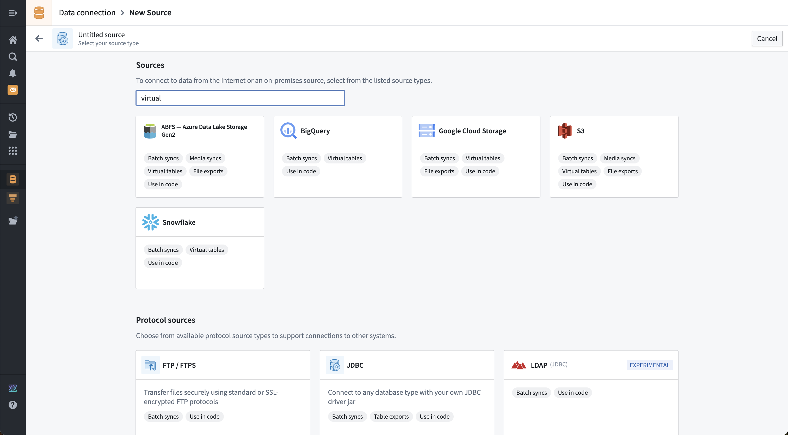

This page describes the core concepts used throughout Data Connection.
A Source represents a single connection to an external system, including any configuration necessary to specify and locate the target system (typically a URL) and the credentials required to successfully authenticate. Sources must be configured with a particular worker defining where compute for any capabilities used with the source will be run. Note that the agent worker also controls the networking between the Palantir platform and the target system.
A source is set up based on a particular connector (also referred to as a source type). A broad range of connectors are available in the Palantir platform, designed to support the most common data systems across organizations. Depending on the connector and worker selected, different capabilities may be available.
For systems without a dedicated connector, the generic connector or REST API source may be used with code-based connectivity options such as external transforms, external functions, and compute modules.
A credential is a secret value that is required to access a particular system; that is, credentials are used for authentication. Credentials can be passwords, tokens, API keys, or other secret values. In the Palantir platform, all credentials are encrypted and stored securely. Depending on the worker, secrets may be stored locally on a Data Connection agent, or directly in the platform.
Some sources are able to authenticate without storing any secrets, such as when using OpenID connect, outbound applications, or a cloud identity.
Worker defines where compute for capabilities is run, while networking defines how target systems are reached. See architecture diagrams for examples of how worker and networking work together.
Sources run on a Foundry worker. Agent worker is a legacy option retained for existing customers; see Foundry worker vs. agent worker for the comparison.
:::callout{theme="neutral"} Not all worker types are available for all source types. :::
:::callout{theme="neutral"} Originally, Foundry worker only supported direct egress policies, so sources of that worker type were called "direct connection" sources. Now that these sources also support agent proxy policies, they have been renamed to "Foundry worker" sources to avoid confusion. :::
Foundry worker sources run compute for their source capabilities in Foundry. These sources benefit from Foundry's containerized and scalable job execution, improved stability, and do not incur the maintenance overhead associated with agents. All sources can be used in code.
Networking is configured through egress policies and enables direct connection and connections over an agent proxy.
:::callout{theme="warning" title="Legacy"} Agent worker is in the legacy phase of development. We recommend migrating existing agent worker sources to Foundry worker. See Foundry worker vs. agent worker for the operational reasons behind this recommendation. :::
Agent worker sources run compute for their source capabilities on a customer-provided host via an agent. Networking is configured manually on the agent host firewall and proxy settings; the host must have network access to the source systems it is connecting to.
Networking defines how target systems are reached, while worker defines where capabilities compute are executed. See architecture diagrams for examples on how worker and networking are compatible with each other.
For Foundry worker sources, networking is configured via egress policies. They define at a granular level how each target system can be reached from Foundry, and which egress destinations are permitted.
Sources support two policy types:
:::callout{theme="neutral"} Both direct connection and agent proxy policies can be assigned to the same source for use cases requiring both network paths. An example of this would be use cases needing to retrieve credentials from an internet-hosted system, and using said credentials to authenticate with an on-premise system. :::
Learn more about egress policies.
For agent worker sources, networking is configured directly on the agent host.
An agent is a downloadable program installed within your organizational network and managed from Foundry's Data Connection interface. Agents have the ability to connect to different external systems within your organizational network and are used to power connections leveraging agent proxy policies and agent worker connections.
Read more about how to set up an agent.
Sources may support a variety of capabilities, where each capability represents some functionality that can run over the source connection. There are a wide range of supported capabilities for bringing data into Foundry, pushing data out of Foundry, virtualizing data stored outside of Foundry, and making interactive requests to other systems.
A summary of available capabilities is included in the following table. For more information about capabilities supported for a specific connector, refer to that connector's documentation page.
| Capability | Description |
|---|---|
| Batch syncs | Sync data from an external source to a dataset. |
| Iceberg syncs | Sync data from an external source to a Foundry Iceberg table. |
| Streaming syncs | Sync data from an external message queue to a stream. |
| Change data capture (CDC) syncs | Sync data from a database to a stream with CDC metadata. |
| Media syncs | Sync data from an external source to a media set. |
| HyperAuto | Sync an entire system automatically. |
| File exports | Push data as files from a dataset to an external system. |
| Table exports | Push data with a schema from a dataset to an external database. |
| Streaming exports | Push data from a stream to an external message queue. |
| Webhooks | Make structured requests to an external system interactively. |
| Virtual tables | Register data from an external data warehouse to use as a virtual table. |
| Virtual media | Register unstructured media from an external system as a media set. |
| Exploration | Interactively explore the data and schema of an external system before using other capabilities. |
| Use in code | Use a source in code to extend or customize any functionality not covered by the point-and-click-configurable capabilities listed above. This is only available for Foundry worker sources. |
Additional capabilities are being developed, and capability coverage is regularly updated in the documentation for specific connectors.
Supported capabilities for specific connectors are also displayed on the new source page in the Data Connection application. It is possible to search both by connector name and by capability. The example below shows the results of a search for sources that support a "virtual" option.

Batch syncs read data from an external system and write it into a Foundry dataset. A batch sync defines what data should be read and which dataset to output into in Foundry. Batch syncs can be configured to sync data incrementally and allow syncing data both with and without a corresponding schema. Learn how to set up a sync.
Batch syncs are transactional. Each sync run writes data within a single transaction on the output dataset. If a sync fails at any point during execution, the transaction is aborted and no data from that run is committed. This means that a partial failure does not result in partial data; the output dataset remains unchanged from its state before the failed sync. The specific error depends on the cause of the failure. You can inspect the error message and full stack trace for a failed run on the sync's Runs tab. For common failure patterns, learn how to troubleshoot syncs.
In general, there are two main types of batch syncs:
Iceberg syncs read data from an external source and write it directly into a Foundry Iceberg table, rather than a standard dataset. Iceberg syncs support both non-incremental and incremental ingestion, along with several write modes. Iceberg syncs are only supported on the Foundry worker runtime and are available for a subset of connectors. Learn more about syncing data to Iceberg tables from Data Connection.
Streaming syncs provide the ability to stream data from systems that provide low latency data feeds. Data is delivered into a streaming dataset. Some examples of systems that support streaming syncs include Kafka, Amazon Kinesis, and Google Pub/Sub.
Learn more about streaming syncs.
Change data capture (CDC) syncs are similar to streaming syncs, with additional changelog metadata automatically propagated to the streaming dataset where data is delivered. This type of sync is normally used for databases that support some form of low-latency replication. Learn more about change data capture syncs.
Media syncs allow importing media data into a media set. Media sets provide better tooling than standard datasets for ingesting, transforming, and consuming media data throughout Foundry. When dealing with PDFs, images, videos, and other media, we recommend using media sets over datasets. Learn more about media syncs.
HyperAuto is a specialized capability that can dynamically discover the schema of your SAP system and automate syncs, pipelines, and creation of a corresponding ontology within Foundry. HyperAuto is currently only supported for SAP. Learn more about HyperAuto.
File exports are the opposite of file batch syncs. When doing a file export, data is taken directly from the underlying files contained within a Foundry dataset, which are written as-is to a filesystem location in the target system. Learn more about file exports.
Table exports are the opposite of table batch syncs. When performing a table export, data is exported as rows from a Foundry dataset with a schema, which are then written to a table in the target system. Learn more about table exports.
Streaming exports are the opposite of streaming syncs. When doing a streaming export, data is exported from a Foundry stream, and records are written to the specified streaming queue or topic in the target system. Learn more about streaming exports.
Webhooks represent a request to a source system outside of Foundry. Webhook requests can be flexibly defined in Data Connection to enable a broad range of connections to external systems. Learn more about webhooks.
Virtual tables represent the ability to register tabular data from an external system into a virtual table resource in Foundry.
In addition to registering individual virtual tables, this capability also allows for dynamic discovery and automatic registration of all tables found in an external system.
Learn more about virtual tables.
Virtual media works similarly to media syncs, allowing media from an external system to be used in a media set but without copying the data into Foundry. Instead, media files contained in an external system can be registered as virtual media items in a specific media set.
Learn more about virtual media.
The interactive exploration capability allows you to see what data is contained in an external system before performing syncs, exports, or other capabilities that interact with that system.
Exploration is most commonly used to check that a connection is working as intended and that the correct permissions and credentials are being used to connect.
The ability to use connections from code is intended to allow developers to extend and customize connections from Foundry to other systems. Palantir's general principle is that anything possible in the platform using dedicated connectors and point-and-click configuration options should also be achievable by writing custom code. At any point, developers should be able to switch to code-based connectivity for more granular control over the functionality or performance of workflows that perform external connections.
Any connector may be used in code; in most cases, we recommend using either the REST API source or generic connector when connecting from code.
:::callout{theme="neutral"} Agent worker connections cannot be used in code. Also, some credential types such as cloud identity, outbound application, and OIDC may not currently be used from code. :::
| Use in code option | Description |
|---|---|
| External transforms | External transforms allow transforms written in Python to communicate with external systems. External transforms are a code-based alternative for file batch syncs, file exports, table batch syncs, table exports, and media syncs. External transforms may also be used to register data into virtual media sets and virtual tables. |
| External functions (webhooks) | External functions written in TypeScript support importing a source in order to invoke existing webhooks defined on that source. This allows existing webhook calls to be wrapped in custom typescript logic and error handling. |
| External functions (direct) | External functions now allow direct calls to external systems using fetch for TypeScript and requests for Python. External functions are a code-based alternative for webhooks. |
| Compute modules | Compute modules allow for long-running compute and writing connections in arbitrary languages. Compute modules may be used as a code-based alternative for streaming syncs, streaming exports, change data capture syncs, and webhooks. |
| External models | External models currently do not support importing sources. Instead, you must use network egress policies directly. |
| Code workspaces | Code workspaces currently do not support importing sources. Instead, you must use network egress policies directly. |
| Code workbooks | Code workbooks currently do not support external connections. |
Data connection also includes a variety of other concepts relevant for specific workflows. Some concepts were previously used and are now sunset, but are retained here for reference.
Historically, the term Sync was used in a generic way to refer to bringing data into Foundry. Syncs are now separated into the more specific capabilities listed above. More details are available for each capability, such as batch syncs, streaming syncs, change data capture syncs, media syncs, and so on.
:::callout{theme="warning" title="Sunset"} Tasks are in the sunset phase of development and will be deprecated at a future date. Full support remains available. We recommend migrating your workflows to code-based connectivity options. :::
The plugin framework used to implement connectors allows custom extensions called tasks. Tasks represent a unit of functionality configured by providing YAML and implemented in Java as part of the Data Connection plugin. Palantir has stopped developing new tasks, and all officially supported capabilities have migrated away from using tasks.
Connections running in Foundry originally only supported direct connections and were referred to as a "direct connection". These connections have now been incorporated into the Foundry worker concept.